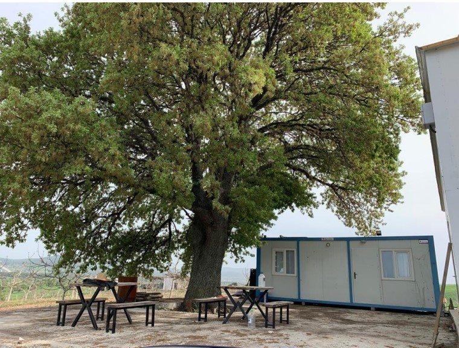
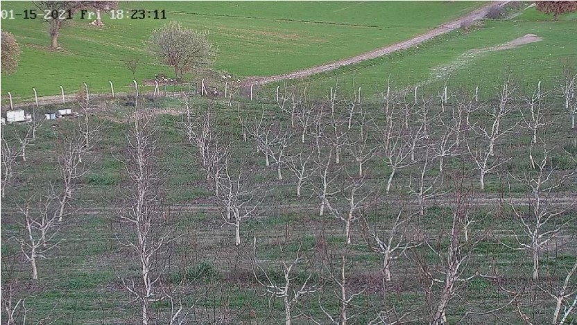
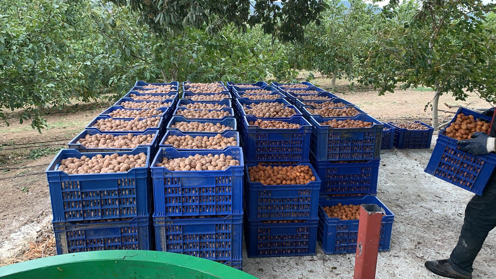
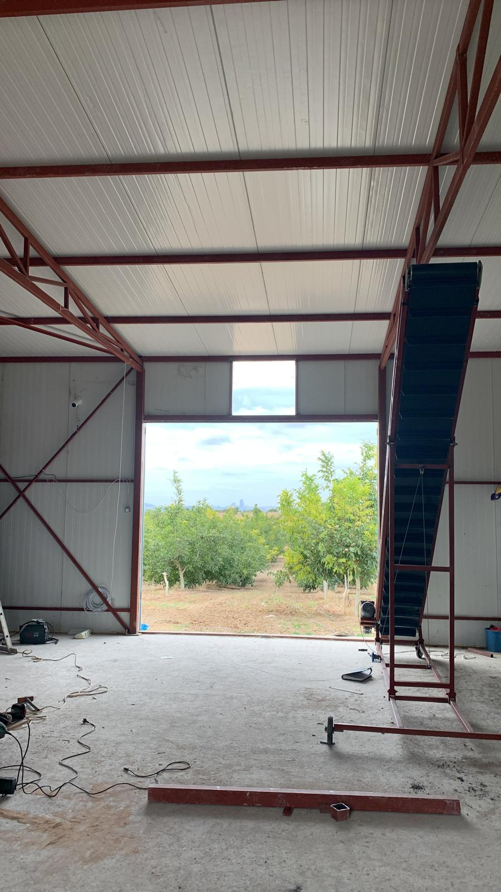
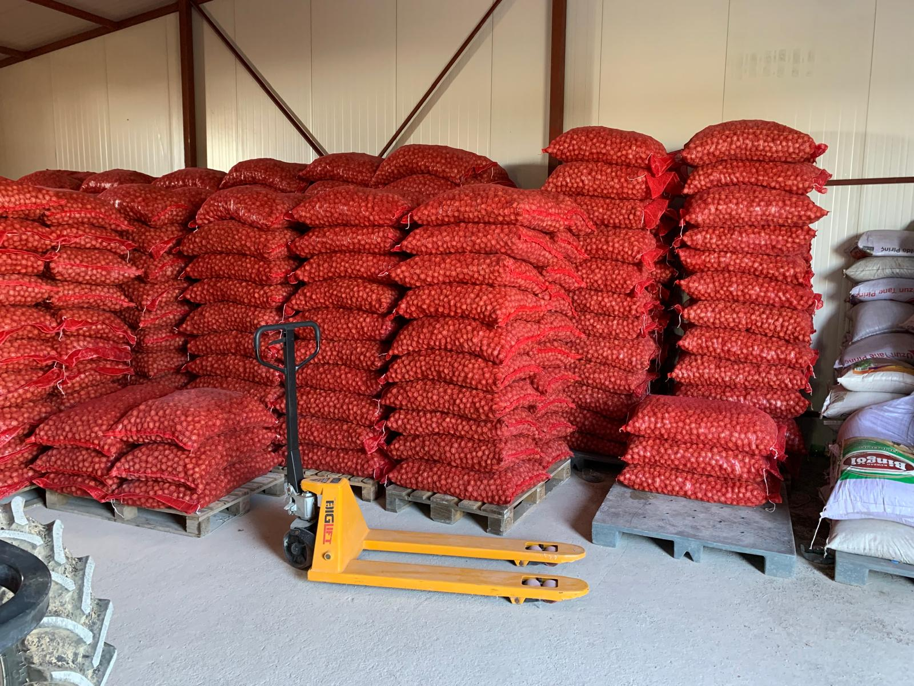
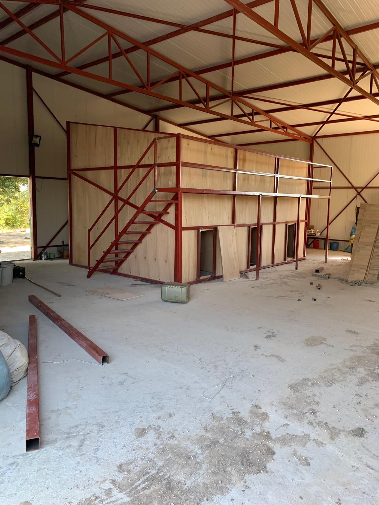
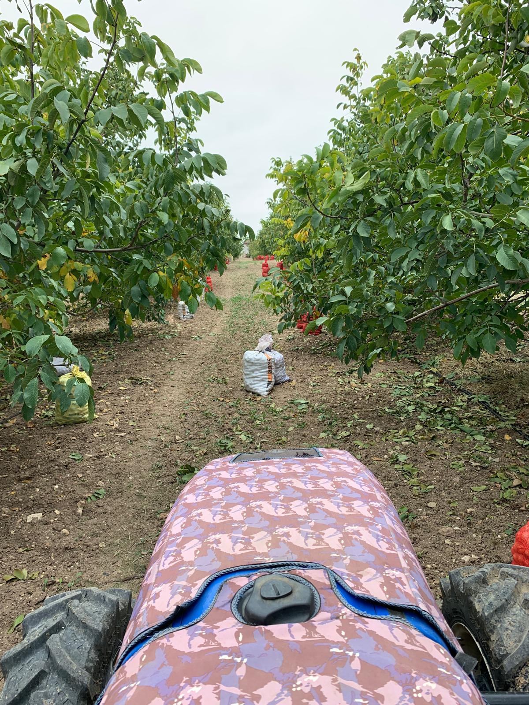
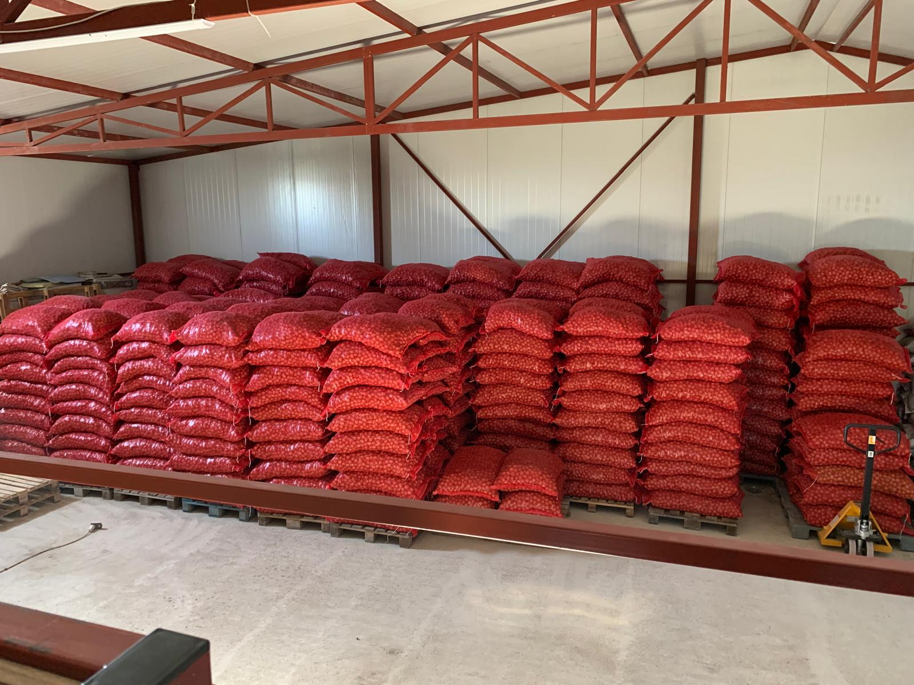

Bahçemiz
Aralık 2012'de dikilen 925 Chandler fidanından bugüne. Bahçemizin kuruluşu, altyapısı ve tesisleri.

Bir aile bahçesi
Bahçemiz Aralık 2012'de kuruldu. Denizli Ekiz Fidancılık'tan alınan 925 mavi sertifikalı Chandler fidanı dikildi; toplam alan 50.699 m².
Parsel köşede, iki tarafı yola açık. Çanakkale–İzmir duble yoluna 750 metre mesafede; yaz kış araçla ulaşılabilir. Çevre, 1.050 metre uzunluğunda ve 2,20 m yüksekliğinde beton direkli kafes tel çitle korunur.
- İl / Köy
- Çanakkale / Akçapınar
- Mevki
- Hasanlar
- Ada / Parsel
- 159 / 38
- Dikim aralığı
- 8 m × 6 m
Ölçülü ve planlı sulama
Bahçe, Akçapınar köyü barajından kapalı sulama hattıyla beslenir. Ana hattan 4 kola ayrılan su, hidrosiklon, gravel ve disk filtre olmak üzere 3 kademede filtrelenir; ultrasonik sayaçla takip edilir.
Her ceviz sırasına ayrı vana konulmuş; sıra üzeri Netafim damlama boruları ile 50 cm'de 2 L/saat debiyle sulanır. Toprak nemi, 30 ve 60 cm derinlikteki sensörlerle günlük olarak ölçülür.
- Kaynak
- Akçapınar barajı
- Filtreleme
- 3 kademe
- Damlama
- Netafim · 2 L/saat
- Ölçüm
- Günlük sensör okuması

Tesisler ve ekipman
Bahçede hasat sonrası tüm işlemler kendi tesisimizde yapılır: soyma, kurutma, boş–dolu ayırma, boylama, tartım ve çuvallama.
Tesis ve ekipman dökümü
Sondaj: Kuraklık riskine karşı Eylül 2021'de açıldı; 138 m derinlik ve saatte 45 ton kapasiteye sahip. Üstünel marka 20 HP dalgıç motor 102 metreye konumlandırıldı.
Enerji: 2020'den beri 32 kW güneş enerjisi sistemi (75×325 W + 14×570 W monokristal panel) kullanılıyor. Yaşam alanının ayrı bir 3 kW sistemi var.
Kurutma: 3 adet silo (170×340 cm), yaklaşık 4.500 kg kuru ceviz kapasitesi. 11 kW fan ve 200.000 kcal sıcak hava kazanı ile kontrollü kurutma yapılır.
İşleme tesisi: 182 m² çelik konstrüksiyon (asma katla birlikte 230 m²). Soyma, kurutma, boylama, boş–dolu ayırma ve çuvallama burada yapılır.
Yaşam alanı: 150 m² beton saha üzerinde 21 m² iki odalı konteyner; su deposu, hidrofor ve fosseptik mevcut.
Ekipman: Erkunt 95B traktör (2021), 24'lü diskaro, hidrolik rotavatör, 2 tonluk ve 400 litrelik ilaçlama makineleri.
Galeri






Bahçeyi yerinde görmek ister misiniz?
Ziyaret ve sorularınız için bize ulaşın; bahçemizi memnuniyetle gezdiririz.